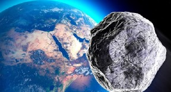
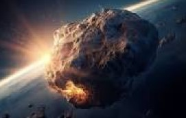

ASTEROIDE
Asteroides são corpos celestes rochosos que realizam órbita em torno do Sol. Formados a partir de materiais que remontam ao princípio do Sistema Solar, os asteroides estão localizados, em sua maioria, entre as órbitas de Marte e Júpiter. Apresentam formato irregular e tamanho inferior ao de um planeta-anão, sendo compostos por silicatos, níquel e ferro. Os asteroides foram descobertos a partir do século XIX, e atualmente já se sabe da existência de cerca de 1,3 milhão desses corpos celestes no Sistema Solar.
CARACTERÍSTICAS
O tamanho dos asteroides também é variável. No entanto, para que um objeto seja classificado como asteroide ele deve ser menor do que um planeta-anão. Embora a maioria dos asteroides seja de pequena dimensão, eles podem ter desde 10 metros até quase 600 quilômetros de diâmetro. Nesse sentido, o que difere os asteroides dos cometas é a sua estrutura e o fato de os asteroides serem corpos inativos e formados por rocha, enquanto os cometas são classificados como corpos ativos e são compostos por gelo.
Os asteroides são corpos celestes que não possuem uma forma definida, tendo em vista que eles são fragmentos de outros objetos que existiram há muito tempo no Sistema Solar. Boa parte deles tem formato esférico ou oval, contendo uma superfície bastante acidentada e irregular em que se observa a formação de buracos.
Como os asteroídes se formam
Os asteroides são fragmentos rochosos destacados de planetas e outros corpos celestes através de impactos em sua superfície ou, ainda, podem ter origem a partir da acreação, que é a junção de poeira e pequenas partículas. Novas partículas são atraídas para esse aglomerado pela força da gravidade, dando origem aos blocos irregulares que conhecemos como asteroides.
Curiosidades
- Não existe um critério para a escolha dos nomes dos asteroides. Existem asteroides com nomes de músicos famosos, personagens de séries, e também há sete asteroides nomeados em homenagem aos tripulantes do ônibus espacial Columbia que perderam suas vidas na explosão do veículo em 1º de fevereiro de 2003.
- Somando a massa de todos os asteroides conhecidos, obtemos um valor inferior à massa da Lua.
- Alguns asteroides, em função do desvio de sua órbita, se transformaram em luas de planetas, como Netuno, Urano, Saturno, Júpiter e Marte.
- Milhares de fragmentos de asteroides já se chocaram com o planeta Terra. Esses fragmentos recebem o nome de meteoroide e, quando em contato com a atmosfera, recebem o nome de meteoros.
- Quando um asteroide tem massa o suficiente para desempenhar órbita dominante, ele pode ser elevado à categoria de planeta-anão. Foi o que aconteceu com Ceres, que antes era classificado como o maior asteroide do Sistema Solar."